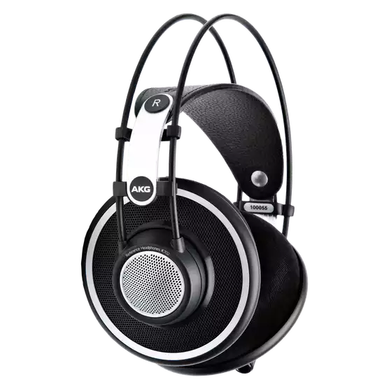
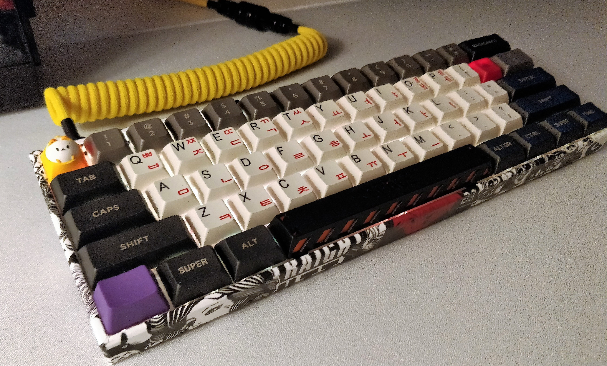

Former engineering studies dude, I'm currently a first year student at EMLV. I love competitive video games and good hifi music! I also spend a lot of time playing with computer hardware and making some custom pc peripherals :)
As previously stated, I love these; especially FPS games, like Apex Legends or Kovaak's. You can check out some experimental montages I've done if you want!
I love listening to great music supported by good audio equipements! Still, the latter are quite expensive... But I do have great pleasure with my "cheap" AKG K702 headphones.
I quite like personalizing my pc peripherals, like my mouse or my keyboard. For instance, here's a pic of my custom made keyboard, hope you like it! 